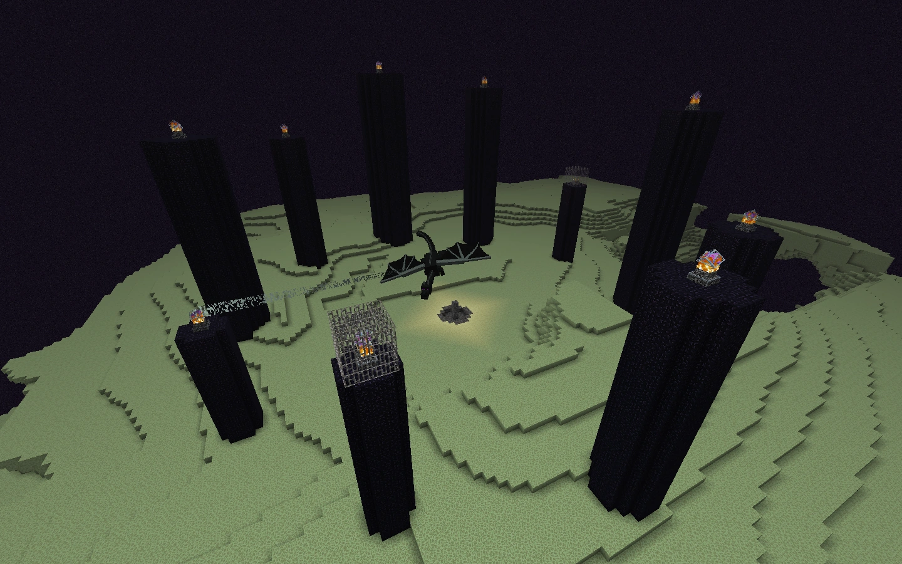
Congrats! You've made it to the End Dimension! You're ready to start your battle with the Ender Dragon!
When you spawn in the End, you're going to spawn on an obsidian platform. You'll usually either be floating, or surrounded by Endstone. If you're floating, you'll need to bridge over to the island using blocks. If you're underground, you'll need to dig your way up to the island. Below is an example of each.
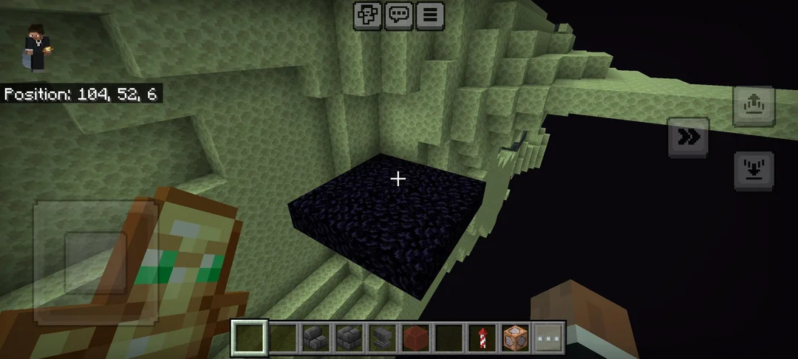
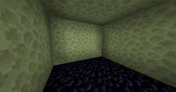
Once you're on the main island, first thing to remember is to not look directly at the Enderman. It doesn't matter what skill level you're at, it will happen on accident. If an Enderman starts to attack you, place a water bucket down beneath you. Enderman can't touch water so this will keep you safe while they try to attack. This will allow you to kill them and continue your fight! Don't forget to use you shield if you need to by crouching to protect yourself if needed!
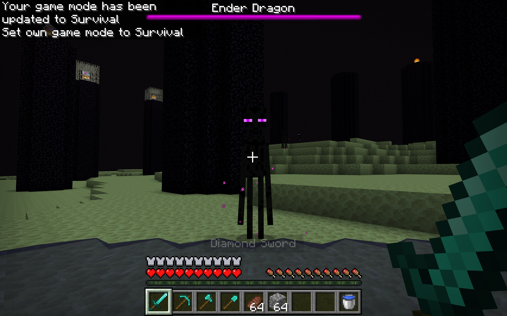
Now that you know how to defend yourself against the Enderman. Look out for the Dragons Breath. Dragons Breath causes damage to players during the battle. It is a purple lingering effect that the dragon sprays at you. If it hits you get out of the purple area as soon as you can! Your shield will not protect you from dragons breath.
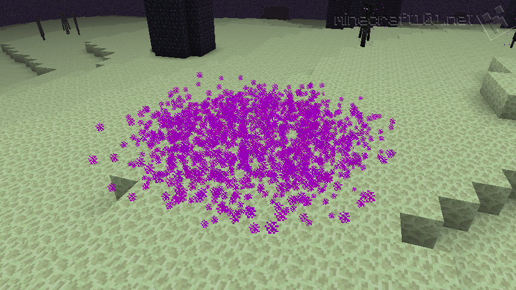
You should see these large dark obsidian towers with a crystal at the top. Below is an image of them.
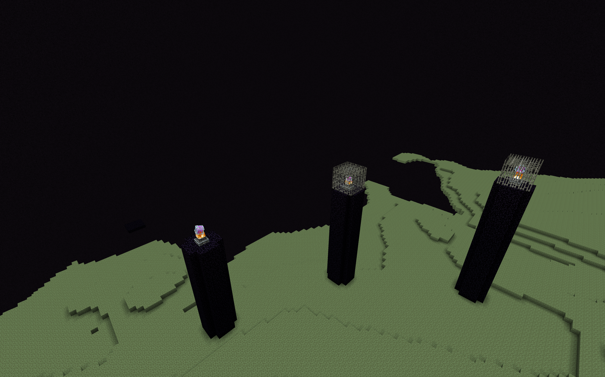
You're first goal in the end is to destroy the crystals at the top of the end towers. This can be done for most of the towers using your bow.
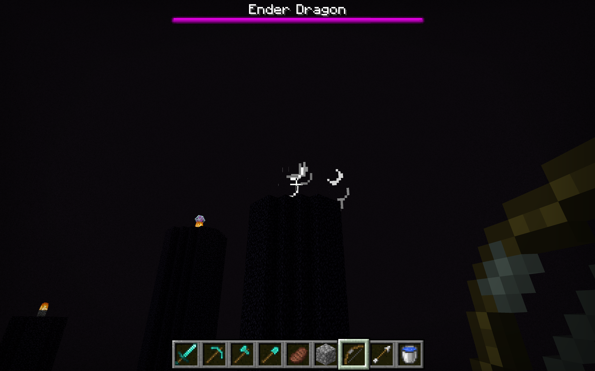
There are some towers that have cages. To destroy these crystals, build up the corner of the tower. To do this, equip a block, look straight down, and simultaneously hold the right click on your mouse, and the spacebar. You should hit your head on the corner of the cage once you're at the top. Break only the one block on bottom corner of the cage and the one above it. This is the one you hit your head on. Crouch and destroy the crystal by hitting it with your sword! Be wary when towering up the edges of the towers. The Dragon can knock you off and you will have to pull a manuever called a water clutch. This will be covered momentarily.
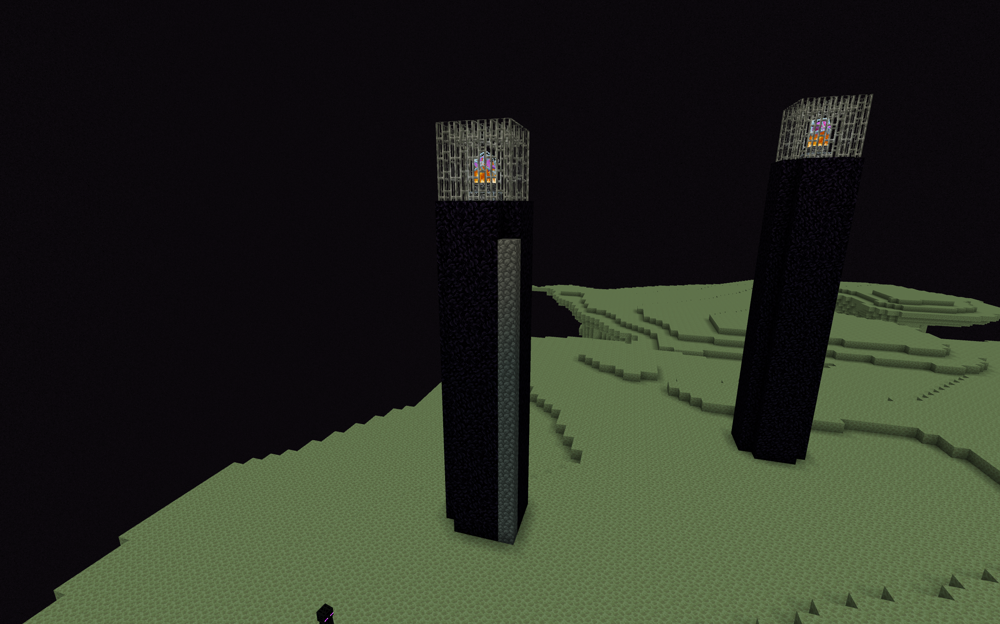
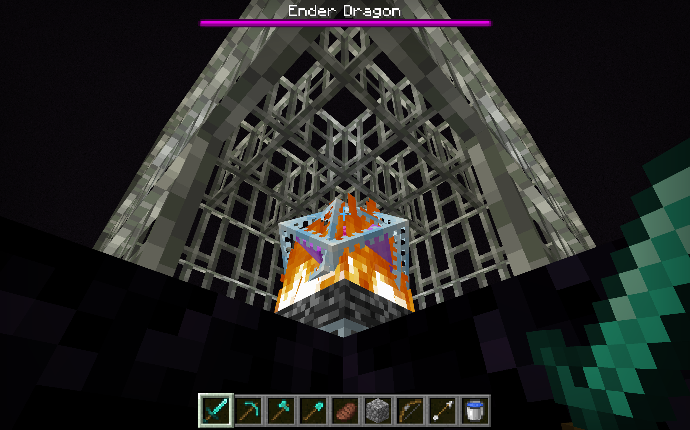
The reason you have to destroy the crystals is because the Ender Dragon uses them to heal. You can see the health bar in the top of your screen. When the Dragon is near a crystal, the crystal sends a beam which heals the Dragon. This can be seen in the image below.
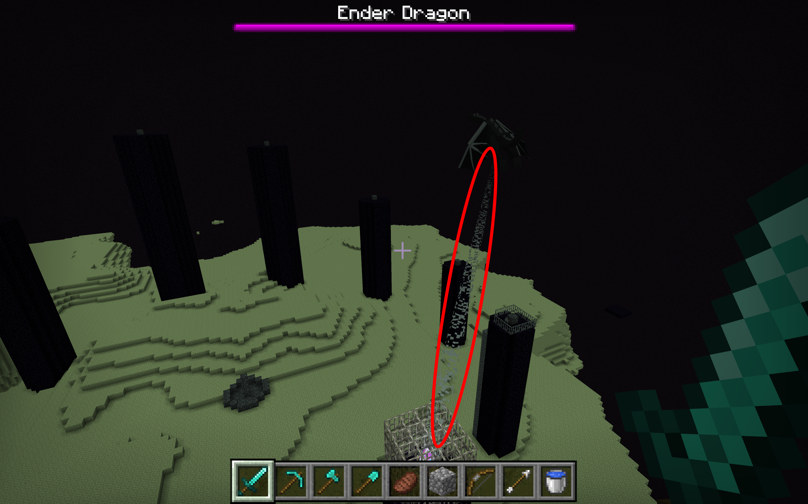
Once you've destroyed all of the crystals, you're ready to fight the Ender Dragon! You may have noticed while completing these previous steps that the Dragon has four phases. The first phase is what we will call the home phase. The dragon is stationary above the Bedrock pillar in the center of the island. When the Dragon is in this position you can hit it with your sword. BE WARY though. When the the Dragon enters its second phase, it will launch you really high in the air! The best way to save yourself is what is called a water clutch. This is done by using a water bucket to place water on the ground right before you land to save your fall. This is a very difficult task to pull off. If you die it's okay! It happens to everyone. Jump back in that portal, grab your items, and continue the fight!
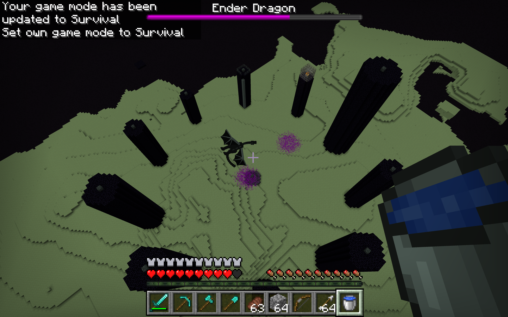
The second phase is the takeoff phase. This is where the Dragon flys up to it's cruising altitude. The third phase is it's main flying phase where it flys around different end crystals to heal. This phase still commences even if there are no crystals left. The fourth phase is its homing phase where it both adjusts it's flight, and lowers it's altitude to fly right back into the first phase.
In phases two through four, these are opportunities to shoot the Dragon with your bow. When it's in it's main home phase, arrows will bounce right off of the Dragon. Hitting it with your sword and shooting it with arrows is the fastest way to kill the Dragon. However, solely relying on arrows is the safest way. You choose how you want to fight the Dragon!
You'll know you've defeated the Ender Dragon once the health bar is at zero. It will start emmiting light and making a loud screeching sound.
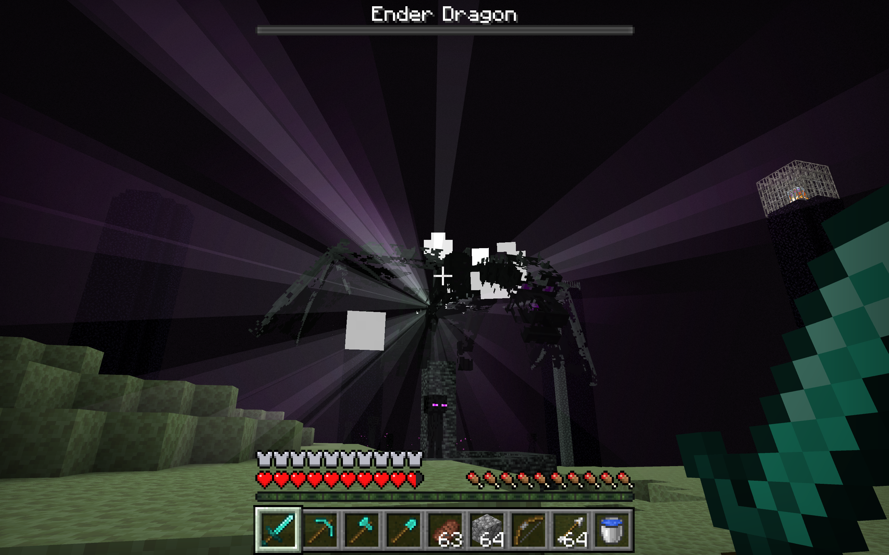
Once this is finished you'll notice two things. Firstly, there is a lot of experience points on the ground. Feel free to pick all of those up! Secondly, there is a purple egg on the Bedrock pillar above the now open portal.
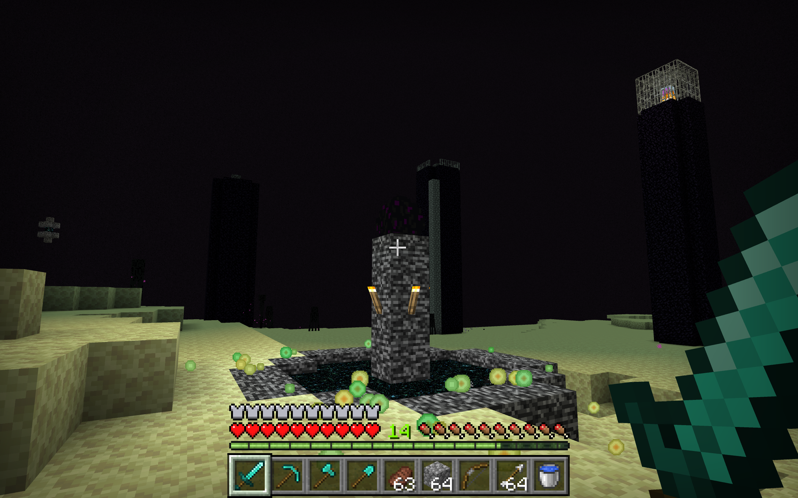
Now don't jump into the portal just yet! You want to collect that egg as there is only one in the entire Minecraft world. Go ahead and click on the egg! You'll notice a purple trail that travels a few blocks. If you follow it you'll see the egg. Don't click it again. The egg cannot be broken like a block.
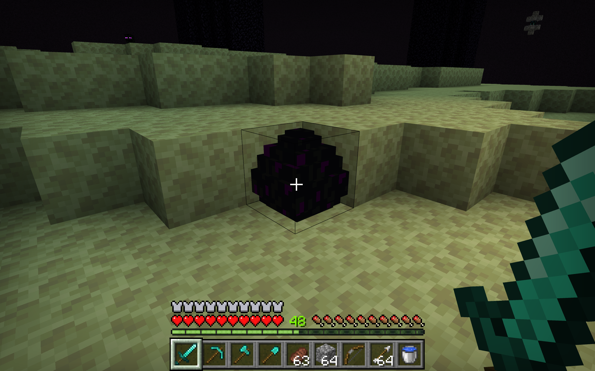
To collect the egg, dig out the area underneath of it without breaking the block it's sitting on. Then place a torch underneath. Then you can break the block that it's sitting on. The egg will fall and become an item. Then you can pick it up!
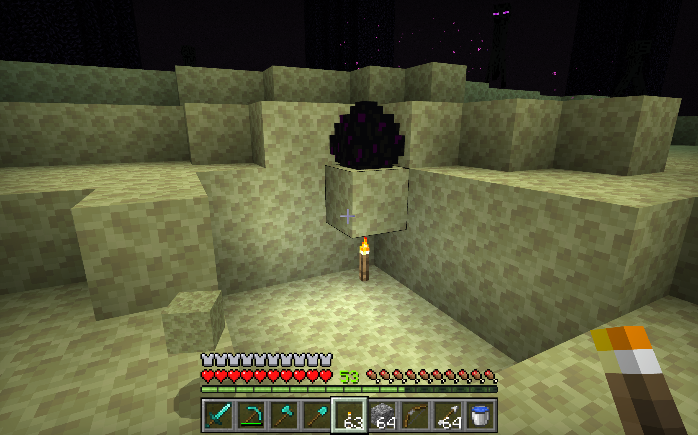
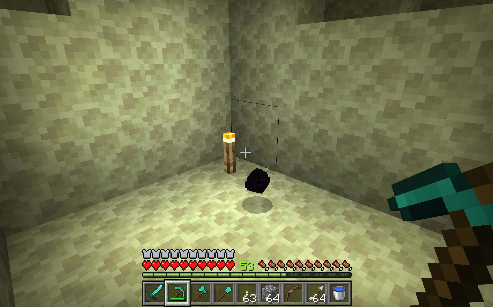
Collect your egg. You can do as you please with it. Build a shrine in your base, put in in a chest or item frame. Whatever you want! Return to the portal and jump in to roll credits and return to the Overworld.
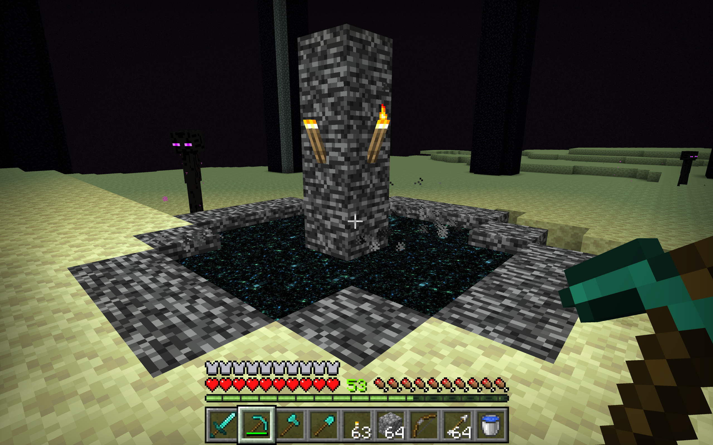
CONGRATS!!! YOU'VE BEAT MINECRAFT AND CONQUERED THE END!